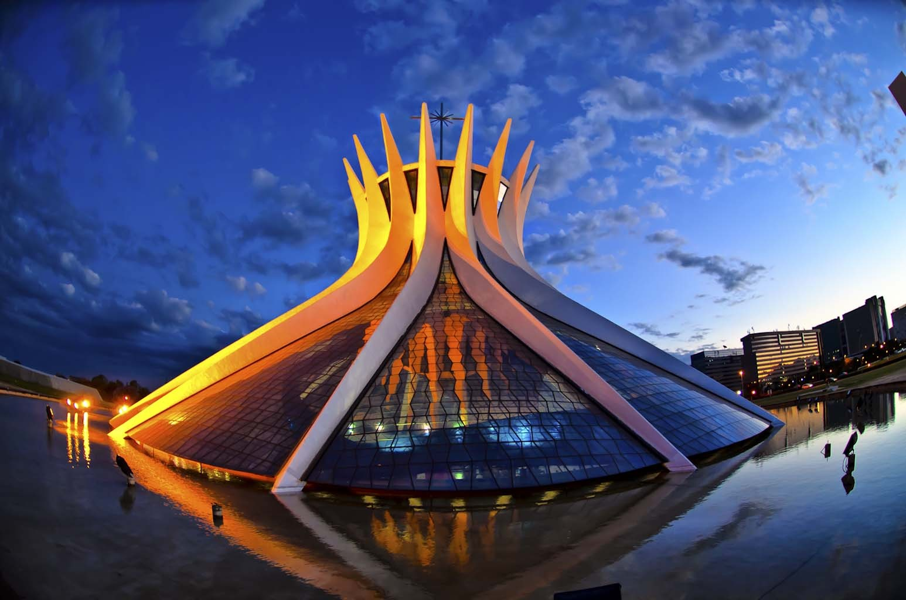

The Capital - Brasilia
Brasília (AFI: [bɾaˈziljɐ]) é a capital federal do Brasil e a sede do governo do Distrito Federal.[9] A capital está localizada na região Centro-Oeste do país, ao longo da região geográfica conhecida como Planalto Central. Segundo estimativa do Instituto Brasileiro de Geografia e Estatística (IBGE) para 2017, sua população era de 3 039 444 habitantes (4 284 676 em sua área metropolitana), sendo, então, a terceira cidade mais populosa do país.[10][nota 1] Brasília é também a quinta concentração urbana mais populosa do Brasil.[13] A capital brasileira é a maior cidade do mundo construída no século XX.[14]
A cidade possui o maior produto interno bruto per capita em relação às capitais,[15] o quarto maior entre as principais cidades da América Latina e cerca de três vezes maior que a renda média brasileira.[16] Como capital nacional, Brasília abriga a sede dos três poderes da República (Executivo, Legislativo e Judiciário) e 127 embaixadas estrangeiras.[17] A política de planejamento da cidade, como a localização de prédios residenciais em grandes áreas urbanas, a construção da cidade através de enormes avenidas e a sua divisão em setores, tem provocado debates sobre o estilo de vida nas grandes cidades no século XX. O projeto da cidade a divide em blocos numerados, além de setores para atividades pré-determinadas, como o Setor Hoteleiro, Bancário ou de Embaixadas.
O plano urbanístico da capital, conhecido como "Plano Piloto", foi elaborado pelo urbanista Lúcio Costa, que, aproveitando o relevo da região, adequou-o ao projeto do lago Paranoá, concebido em 1893 pela Missão Cruls.[18] A cidade começou a ser planejada e desenvolvida em 1956 por Lúcio Costa e pelo arquiteto Oscar Niemeyer, com cálculos estruturais do engenheiro Joaquim Cardoso.[19] Inaugurada em 21 de abril de 1960, pelo então presidente Juscelino Kubitschek, Brasília tornou-se formalmente a terceira capital do Brasil, após Salvador e Rio de Janeiro. Vista de cima, a principal área da cidade se assemelha ao formato de um avião, porém foi projetada em formato de borboleta.[20][21] A cidade, comumente referida como "Capital Federal" ou "BSB", é considerada um Patrimônio Mundial pela UNESCO, devido ao seu conjunto arquitetônico e urbanístico[22] e possui a maior área tombada do mundo, com 112,5 quilômetros quadrados.[23][24]
A cidade tem um estatuto único no Brasil, já que é uma divisão administrativa distinta de um município legal, como outras cidades brasileiras, semelhante ao que acontece com Washington, D.C., nos Estados Unidos, e com Camberra, na Austrália. A palavra "Brasília" é usada como um sinônimo do Distrito Federal como um todo por meio de sinédoque; no entanto, o DF é composto de 31 regiões administrativas, das quais apenas uma é o centro da entidade: a Região Administrativa I, que é basicamente formada pelo Plano Piloto e pelo Parque Nacional de Brasília. Publicações demográficas geralmente não fazem esta distinção e listam a população brasiliense como sinônimo da população do DF, considerando-se o conjunto como uma única entidade. O Distrito Federal, acumula características de município e estado, sendo que as suas outras regiões administrativas, também chamadas "cidades-satélites", não são tratadas como municípios.